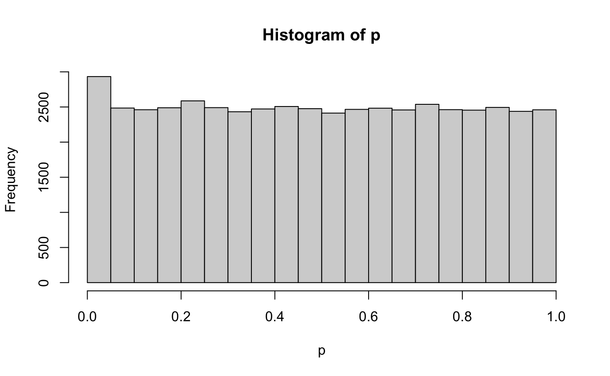
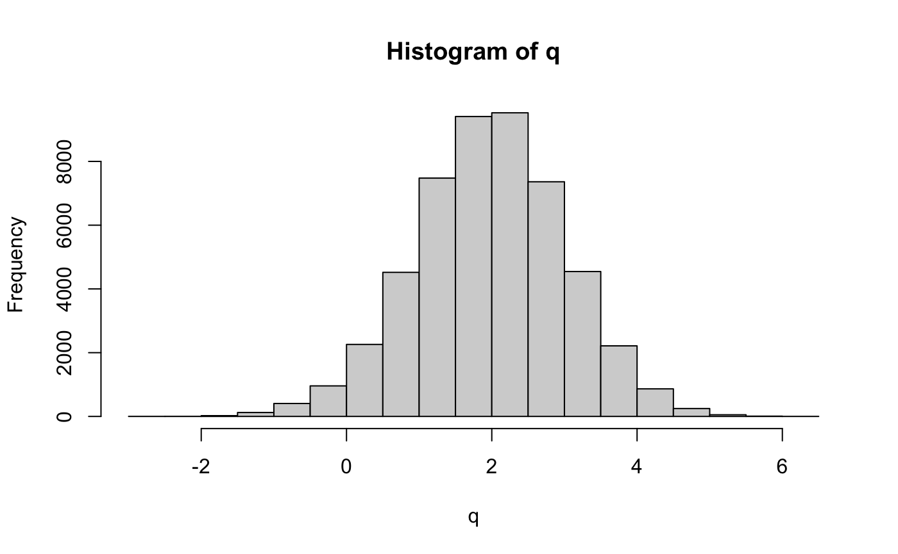
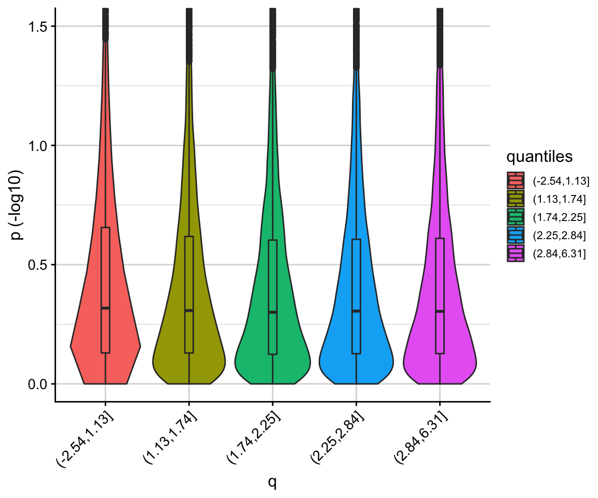

Introductory vignette
fcfdr-vignette.RmdThe fcfdr R package implements cFDR for a variety of auxiliary covariates, unlike earlier empirical cFDR methods (Liley and Wallace 2019; https://github.com/jamesliley/cfdr) that only support auxiliary \(p\)-values from related traits. A direct utility of fcfdr is to leverage relevant functional genomic data with GWAS \(p\)-values to increase power for GWAS discovery. The method generates “v-values” which can be interpreted as GWAS \(p\)-values that have been re-weighted according to the auxiliary data values. Since the v-values are analogous to p-values, they can be used directly in any error-rate controlling procedure.
The fcfdr R package contains two key functions:
flexible_cfdr(): Implements cFDR leveraging \(\textbf{continuous}\) auxiliary covariates.binary_cfdr(): Implements cFDR leveraging \(\textbf{binary}\) auxiliary covariates.
Both functions require 2 parameters to be specified:
p: GWAS \(p\)-values for the trait of interest (vector of per-SNP \(p\)-values)q: Auxiliary data values (vector of per-SNP auxiliary data values)
along with either the indices of a subset of independent SNPs (indep_index) in flexible_cfdr() or the chromosome for which each SNP resides (chr) in binary_cfdr().
For further details, including instructions to generate indep_index, examples of auxiliary data to leverage and instructions to apply cFDR iteratively, please see the Extra Information vignette
Simple walk-through example
Firstly, load the flexible cFDR package:
Next, simulate \(p\)-values for 50,000 genetic variants, including 500 associated variants.
n = 50000
n1p = 500 # associated variants
zp = c(rnorm(n1p, sd=5), rnorm(n-n1p, sd=1)) # z-scores
p = 2*pnorm(-abs(zp)) # convert to p-values
hist(p)
We simulate relevant auxiliary data from a mixture normal distribution (\(q\)). The associated SNPs (with indices 1-500) are sampled from \(N(-0.5, 0.5^2)\) and the non-associated SNPs (with indices 500-50000) are sampled from \(N(2,1)\).
mixture_comp1 <- function(x) rnorm(x, mean = -0.5, sd = 0.5)
mixture_comp2 <- function(x) rnorm(x, mean = 2, sd = 1)
n = length(p)
z = runif(n)
q <- c(mixture_comp1(n1p), mixture_comp2(n-n1p))
hist(q)
We can use the corr_plot function to visualise the relationship between \(p\) and \(q\). We observe that low \(p\)-values (i.e. high \(-log10(p)\)) are enriched for low \(q\) values.
corr_plot(p, q)
We are now ready to use the flexible_cfdr function to derive the \(v\)-values. Note that for the purpose of the vignette, we do not specify an independent subset of SNPs, however for real analyses this parameter should be specified appropriately to avoid biased bandwidth estimations when fitting the KDE. Subsets of independent SNPs can be readily found using PLINK or LDAK - see the vignette for deriving LDAK weights here.
This line of code will take approximately 4 minutes to run.
res <- flexible_cfdr(p, q, indep_index = seq(1, n, 1))
str(res)
#> List of 2
#> $ :'data.frame': 50000 obs. of 3 variables:
#> ..$ p: num [1:50000] 1.73e-03 3.59e-01 2.94e-05 1.51e-15 9.94e-02 ...
#> ..$ q: num [1:50000] -0.325 -0.297 -0.458 -0.383 -0.578 ...
#> ..$ v: num [1:50000] 2.07e-04 4.94e-02 3.48e-06 1.70e-16 1.22e-02 ...
#> $ :'data.frame': 1 obs. of 3 variables:
#> ..$ q_low : num -0.169
#> ..$ left_cens : int 1108
#> ..$ splinecorr: int 109
p = res[[1]]$p
q = res[[1]]$q
v = res[[1]]$vThe output from the function is a list of length two. The first element is a data.frame containing the \(p\)-values (input parameter p), the auxiliary data values (input parameter q) and the generated \(v\)-values. The second element contains auxiliary data, such as how many data-points were left-censored in the method and/or spline corrected.
Note that the cFDR framework requires that low \(p\)-values are enriched for low \(q\) values, so that if the correlation between \(p\) and \(q\) is negative then the function intrinsically flips the sign of \(q\), meaning that the \(q\) values reported in the data.frame output may be \(q:=-q\).
We can then visualise the results using the pv_plot and log10pv_plot functions. We observe that \(v\)-values for SNPs with high \(q\) values are increased, whilst those for SNPs with low \(q\) values are decreased.
pv_plot(p = p, q = q, v = v)
log10pv_plot(p = p, q = q, v = v,
axis_lim = c(0, 10)) # zoom in to interesting region
Finally, we run the Benjamini-Hochberg procedure on the \(v\)-values and control the FDR at 0.05. This means that we are willing to accept up to 5% of the associations to be false positives.
For comparison, we do the same to the raw p-values:
‘True’ associations are those with indices 1-500, so the proportions of false discoveries are
# cFDR
1 - (length(intersect(hit,c(1:500)))/length(hit))
#> [1] 0.04363636
# p-value
1 - (length(intersect(hit_p,c(1:500)))/length(hit_p))
#> [1] 0.02262443Altogether, the cFDR method has found 47 new associations that are true whilst controlling the FDR.